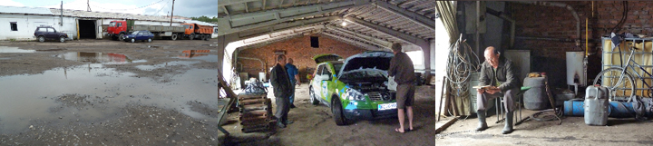

Anton og Martha var om natten fløjet fra Ukraine til Omsk for at møde os og køre med til Ulan Ude. På en internetcafe åbnede de moto-mundos hjemmeside, hvor de så at den grønne bil stod parkeret foran hotel Mayak. Gensynsglæde og stor morgenmad. Grønne blev pakket bilen så der også blev plads til Anton og Martha og deres rygsække. Vi kørte så af sted mod Irkutsk med campingbordet og stolene på taget. 25 kilometer udenfor Omsk standsede vi, og bagefter ville Grønne ikke starte. Timerne gik med at telefonere til Danmark. Grønne ville stadig ikke starte.
Mørket var ved at falde på. Anton og Martha stod ved landevejen da der ved et lykketræf standsede en lille gul rutetaxi som de kom med. Grønne, Hjalte og jeg blev kørt tibage til hotellet pr. "evakuator" Vi ankom samtidig alle fire, og fik gode værelser. Ret heldigt, men hvad nu? Nina
Vi vågnede op i 14 graders - kan man kalde det varme? Vi frøs bitterligt og senere på dagen styrtede regnen ned Et sted blev bilens dæk så forstoppede af mudder at den sejlede rundt indtil jeg forstod problemer og forsigtigt fik skuden på ret køl igen. Ved indkørselen til Omsk stod regnen ned i tove, men lidt efter brød en bleg sol igennem. Dagen endte på det elegante hotel Mayak, hvor grønne fik en ledning ud gennem et vindue i lobbyen. Vi er nu halvvejs til Kina, og her i Omsk vil vi møde Anton og Martha, som skal køre med til Ulan Ude. Spørgsmålet er hvordan vi finder dem? Omsk er en kæmpestor by, den næststørste russiske by på denne side af Ural.
 Vejen var helt lige kilometer efter kilometer. Det var søndag, værkstederne var lukkede, og det var umuligt at få strøm. Sådanne besværligheder skyldes naturligvis ikke bilen, men det faktum at der endnu ikke er ladestandere til elbiler. Vi vidste at vi ikke kunne nå frem til et hotel, så vi spiste tidlig aftensmad ved det sidste vejkryds og købte seks boller med til morgenmaden. Når der ikke er nogen strøm at finde må vi selv lave den. Det tør nok siges at her er plads nok. Så vi satte teltet op, tændte generatoren, og nød en aften i naturen med en flammende solnedgang.
Vejen var helt lige kilometer efter kilometer. Det var søndag, værkstederne var lukkede, og det var umuligt at få strøm. Sådanne besværligheder skyldes naturligvis ikke bilen, men det faktum at der endnu ikke er ladestandere til elbiler. Vi vidste at vi ikke kunne nå frem til et hotel, så vi spiste tidlig aftensmad ved det sidste vejkryds og købte seks boller med til morgenmaden. Når der ikke er nogen strøm at finde må vi selv lave den. Det tør nok siges at her er plads nok. Så vi satte teltet op, tændte generatoren, og nød en aften i naturen med en flammende solnedgang.
Hver aften når Hjalte og Nina skal finde et sted at sove er det mig som bestemmer, Når jeg er ved at løbe ud for strøm, må de bare tage det første hotel som kommer . På den måde får de overraskelser hver eneste dag, og kommer der ikke noget hotel må de sove i skoven. Her til aften kørte jeg dem ind til hotellet i byen i Iz- et eller andet. Der havde Hjalte besvær med at få en stikkontakt til mig. Midt på natten måtte Nina stå op og tage ledningen fra, fordi hotellets bestyrer syntes at den var blevet varm. Det er helt normalt, men de sagde hele tiden nelsia, forbudt. Hjalte måtte så ned og sætte generatoren til. Sikke et postyr...Nej jeg foretrækker langt de små motorvejsmoteller hvor jeg kan stå og snakke med lastbilerne natten igennem imens jeg lader. Der kommer også mange flere for at beundre min smukke krop og mine elektriske dele. Grønne
 Solen skinnede naturligvis og temperaturen var dejlige 38 grader ved middagstid. Imens Grønne ladede på et værksted sad vi på en airconditioneret cafe ved siden af og spiste lasagne - det er de mest overraskende ting som pludselig kan dukke op. Vi er nået ud hvor der er langt mellem hotellerne. Så vi syntes at vi var heldige at finde det der på kortet lignede en by - Vi kørte en tid rundt i den nedslidte landsby som var forkrøblet af et stort industrianlæg. Det viste sig at være gigantiske kornsiloer, tilsvarende de uendelige kornmarker her på egnen. På dette gudsforladte sted lå Hotel URAL med otte små værelser og en stab af flinke mennesker. De syntes ikke at det var et problem at låne os en stikkontakt til Grønne. Efter et par hårdt tiltrængte brusebade iførte jeg mig blå silkekjole og højhælede sko, og Hjalte tog en ren t-shirt på. Så var vi klar til at fejre min fødselsdag med en flaske perlende russisk champagne på sengekanten.
Solen skinnede naturligvis og temperaturen var dejlige 38 grader ved middagstid. Imens Grønne ladede på et værksted sad vi på en airconditioneret cafe ved siden af og spiste lasagne - det er de mest overraskende ting som pludselig kan dukke op. Vi er nået ud hvor der er langt mellem hotellerne. Så vi syntes at vi var heldige at finde det der på kortet lignede en by - Vi kørte en tid rundt i den nedslidte landsby som var forkrøblet af et stort industrianlæg. Det viste sig at være gigantiske kornsiloer, tilsvarende de uendelige kornmarker her på egnen. På dette gudsforladte sted lå Hotel URAL med otte små værelser og en stab af flinke mennesker. De syntes ikke at det var et problem at låne os en stikkontakt til Grønne. Efter et par hårdt tiltrængte brusebade iførte jeg mig blå silkekjole og højhælede sko, og Hjalte tog en ren t-shirt på. Så var vi klar til at fejre min fødselsdag med en flaske perlende russisk champagne på sengekanten.
En dag med dejligt vejr. Kun 23 grader om morgenen og 33 ved middagstid. Vi satte campingbordet op i skyggen af nogle birketræer og nød en tre timers frokost pause, hvor Grøn guffede dejlig 380 volt strøm i sig. Puklerne på vejen holdt os vågne ved rattet. Vejbanen var smeltet og lastvognenes hjul havde efterladt dybe huller og tilsvarende høje pukler . Dræberpukler kalder vi dem fordi Grøn har en batterikasse under maven, som kan støde på hvis vi ikke er opmærksomme. Men det gik fint. Da vi om aftenen skulle finde et motel, var der ikke noget indenfor batteriernes rækkevidde. Så var det hurtigt ned ad en markvej, og på med nødgeneratoren. Når vi ikke kan finde strøm må vi lave den selv, vi kan ikke tillade os at være kræsne. Vi tilbragte vi natten i det fri, teltet var vi for dovne til at sætte op. Solen gik ned og en orange halvmåne kom til syne på en høj himmel prikket af stjerner. Tæt ved raslede endeløse tog forbi på den transsibiriske jernbane hele natten.
 I morges da vi vågnede havde det regnet! Vi er kommet forbi den værste varme, og det var behagelige 27 grader da vi kørte ind i Uralbjergene! Grønne rullede troligt op ad kilometerlange bakker og trillede nedad med 120 km i timen , eller så hurtigt vi turde. Vi måtte hele tiden holde øje med bulerne og hullerne i vejen, fordi vi risikerer at batterikassen under vognen går på. Bortset fra den lille bekymring går det ganske forrygende. De sidste dage har vi været heldige med at få strøm, måske er vi blevet bedre til at forklare os? det er jo bare en stkkontakt vi skal bruge om aftenen, en ganske almindelig en. Så er Grønne fuldt opladet om morgenen. Midt på dagen holdt vi ladepause ved et bilværksted. Imens så vi på byen Sadka. Senere kom vi til et monument hvor der stod Europa på den ene side og Asien på den anden. Grønne har snart kørt 6000 kilometer. For at fejre det købte vi en souvenir på stedet. En smuk kniv med krusseduller på bladet og et skæfte af birketræ. Muligvis kan kniven finde plads på en væg derhjemme, så den kan vente lidt med at blive lagt ind i skabet med gamle minder.
I morges da vi vågnede havde det regnet! Vi er kommet forbi den værste varme, og det var behagelige 27 grader da vi kørte ind i Uralbjergene! Grønne rullede troligt op ad kilometerlange bakker og trillede nedad med 120 km i timen , eller så hurtigt vi turde. Vi måtte hele tiden holde øje med bulerne og hullerne i vejen, fordi vi risikerer at batterikassen under vognen går på. Bortset fra den lille bekymring går det ganske forrygende. De sidste dage har vi været heldige med at få strøm, måske er vi blevet bedre til at forklare os? det er jo bare en stkkontakt vi skal bruge om aftenen, en ganske almindelig en. Så er Grønne fuldt opladet om morgenen. Midt på dagen holdt vi ladepause ved et bilværksted. Imens så vi på byen Sadka. Senere kom vi til et monument hvor der stod Europa på den ene side og Asien på den anden. Grønne har snart kørt 6000 kilometer. For at fejre det købte vi en souvenir på stedet. En smuk kniv med krusseduller på bladet og et skæfte af birketræ. Muligvis kan kniven finde plads på en væg derhjemme, så den kan vente lidt med at blive lagt ind i skabet med gamle minder.
Nina og Hjalte
Nu er det bestemt at jeg skal til Danmark for at blive repareret og forbedret. Jeg kører ellers godt, og jeg er stadig smuk. Det er systemet som styrer ladningen det er galt med. Så jeg kommer tilbage og kører igen i USA, toptunet med et helt nyt styresystem! Selvfølgelig er jeg skuffet over at jeg ikke kommer med til Kina. Og jeg er også lidt fornærmet over at Hjalte og Nina vil købe en almindelig bil som kan følge Den Grønne gennem Mongoliet. Så kan de have venner med, selv om jeg ikke er der. Det vil være en stor sikkerhed at have to biler, mener Nina og Hjalte. Hele turen er et eksperiment, og det duer ikke at blive fanatisk. Sådan siger de lige nu, men det kan hurtigt skifte, efter hvad der er muligt - eller helt umuligt.
Hav det godt til vi ses igen. Hilsen fra Den Blå Bil
Vi vågnede i morges og opdagede at temperaturen var faldet! Livet på de russiske landeveje har været varmt, støvet og beskidt. Man skal lige indstille sig på det for at forstå den barske charme. Vi sover på de samme billige hoteller som lastbilchaufførerne. Der kan vi få strøm ud gennem et vindue, eller fra et værksted i nærheden. Trafikken er tung tæt og hurtig, ligesom maden på de små cafeer. Landevejslivet er meget langt fra grøn og økologisk livsform, og miljøaktivister møder vi ingen af - Men alle har hørt om elektriske biler og er meget interesserede. Mange vil gerne fotograferes sammen med Grønne.
Ud på eftermiddagen var vi kommet til foden af Uralbjergene, skillelinien mellem Europa og Asien. Grønne trillede os med stor fornøjelse op og ned ad bakkerne og sandelig om der ikke også kom vejsving.
Nina og Hjalte
I dag har vi truffet en en vigtig beslutning sammen med vores elbilkonstruktør og skytsengel Søren: Den kære blå bil som er efterladt i Moskva, bliver sendt hjem til Danmark og repareret. Den grønne bil fortsætter ufortrødent mod Mongoliet og Kina.
Den har også haft problemer med ladningen (ikke vandladningen) på grund af varmen. Vi overvejer alle muligheder for at kunne rejse sammen med de venner som skal møde os i Omsk og Ulan Bator. Måske skal vi have en følgebil - købt eller lejet, måske hjælp fra bilvenner i Mongoliet? som sagt begynder eventyret først der hvor man mister kontrollen over begivenhederne, der hvor man får oplevelser man ikke vidste man ville få... Det vil med garanti blive ved med at være spændende.
Nina og Hjalte